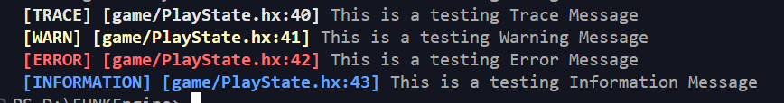

NOTE: This Version is not functional at the moment.
Added: FUNK File Parsing
Added: New Logging system for the console.
Added: Basic Conductor for BPM and song stuff
WIP: New Haxe macro functions for logging -- warn(); err(); info();
WIP: Key Detection based on timing
dang this is gonna be long but its a good one